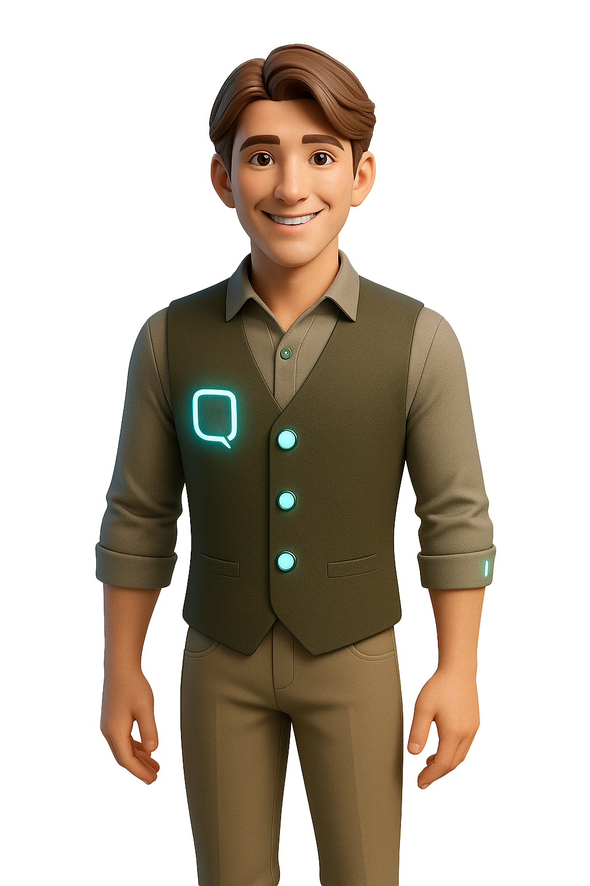

<section id="home" class="hero-section">
  <div class="container">
    <div class="hero-grid">
      <div class="hero-content animate-fade-in">
        <div class="hero-text">
          <h1 class="hero-title">
            Hulp met implementatie van <span class="hero-accent">AI</span> binnen mijn stichting?
          </h1>
          <h2>Gebruik <span class="hero-accent">Q</span>, de AI Partner voor NGO's</h2>
          <p class="hero-description">
            Speciaal ontworpen voor kleine Nederlandse NGO's en stichtingen. Q helpt bij 
            vrijwilligerscoördinatie, donateurbeheer en administratie — zodat jij je kunt 
            richten op je missie.
          </p>
        </div>
        
        <!-- <div class="hero-buttons">
          <button class="btn-hero" (click)="onDiscoverClick()">
            Ontdek Q
            <svg class="btn-icon" width="20" height="20" viewBox="0 0 24 24" fill="none" stroke="currentColor" stroke-width="2">
              <line x1="5" y1="12" x2="19" y2="12"></line>
              <polyline points="12,5 19,12 12,19"></polyline>
            </svg>
          </button>
          <button class="btn-hero-outline" (click)="onDemoClick()">Demo Inplannen</button>
        </div> -->
        
        <!-- <div class="hero-features">
          <div class="hero-feature">
            <svg width="20" height="20" viewBox="0 0 24 24" fill="none" stroke="currentColor" stroke-width="2">
              <path d="M17 21v-2a4 4 0 0 0-4-4H5a4 4 0 0 0-4 4v2"></path>
              <circle cx="9" cy="7" r="4"></circle>
              <path d="M23 21v-2a4 4 0 0 0-3-3.87"></path>
              <path d="M16 3.13a4 4 0 0 1 0 7.75"></path>
            </svg>
            <span>Voor 0-5 FTE organisaties</span>
          </div>
          <div class="hero-feature">
            <svg width="20" height="20" viewBox="0 0 24 24" fill="none" stroke="currentColor" stroke-width="2">
              <path d="M20.84 4.61a5.5 5.5 0 0 0-7.78 0L12 5.67l-1.06-1.06a5.5 5.5 0 0 0-7.78 7.78l1.06 1.06L12 21.23l7.78-7.78 1.06-1.06a5.5 5.5 0 0 0 0-7.78z"></path>
            </svg>
            <span>Vrijwilliger-gedreven</span>
          </div>
          <div class="hero-feature">
            <svg width="20" height="20" viewBox="0 0 24 24" fill="none" stroke="currentColor" stroke-width="2">
              <path d="M14 2H6a2 2 0 0 0-2 2v16a2 2 0 0 0 2 2h12a2 2 0 0 0 2-2V8z"></path>
              <polyline points="14,2 14,8 20,8"></polyline>
              <line x1="16" y1="13" x2="8" y2="13"></line>
              <line x1="16" y1="17" x2="8" y2="17"></line>
              <polyline points="10,9 9,9 8,9"></polyline>
            </svg>
            <span>Minder administratie</span>
          </div>
        </div> -->
      </div>
      
      <div class="hero-image-container animate-slide-up">
        <!--  -->
      </div>
    </div>
  </div>
</section>